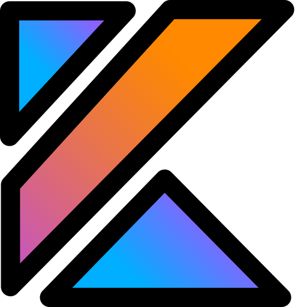
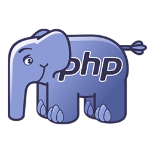

Sobre mim
Olá, meu nome é Isaias, tenho 21 anos e moro em Mauá-SP. Estou no 4º semestre da faculdade de Análise e Desenvolvimento de Sistemas. Estou considerando fazer outra faculdade no futuro, mas, antes disso, preciso encontrar um emprego. Gosto muito da parte de back-end, mas também tenho conhecimentos em front-end e banco de dados.
 04.21.52_53265675.jpg)
Linguagens
-
 JAVA
JAVA
-  KOTLIN
-  PHP
Meus Planos de Estudos
- Java Spring Boot - Segurança (back-end)
- Kotlin para desenvolvimento mobile (full-stack)
- PHP para desenvolvimento web (full-stack)
- SQL e PostgreSQL (banco de dados)
- AWS Cloud (Computação em Nuvem)